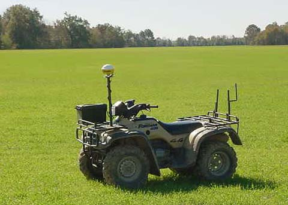
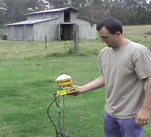

Agricultural Applications of GPS
Among the many applications of the Global Positioning System is the rapid survey of agricultural fields.

With a rugged, field-model GPS unit with a high-gain antenna, a field survey may be done rapidly with a 4-wheel, all-terrain vehicle. The accompanying software calculates the field size, plots an outline of the field and breaks it up with a grid to facilitate the collection of sample data on the field.
The use of the GPS unit makes practical a systematic sampling of an agricultural field of any size or shape. With portable software, the unit can indicate which grid the user is in, so that soil samples may be taken. With systematic soil samples, the appropriate amount of fertilizer can be applied to different areas of the field. The use of the GPS can easily pay for itself in the cost savings on fertilizer and other chemicals. Once the crop is planted, the same GPS-guided procedures can be used to survey plant disease or insect infestation and tailor the treatments of the crop to the needs in each sector. Data on field size and needs can be collected quickly and available computer software used to calculate the materials list for the treatment of the field.
|

|
In rice-growing country, the GPS is increasingly used to map out the field terrain for the laying out of dikes for flooding the rice. The GPS technology can map the elevations and map the needed dikes.
Contributing author: Brent Lassiter
|
Index
Orbit concepts
Reference |